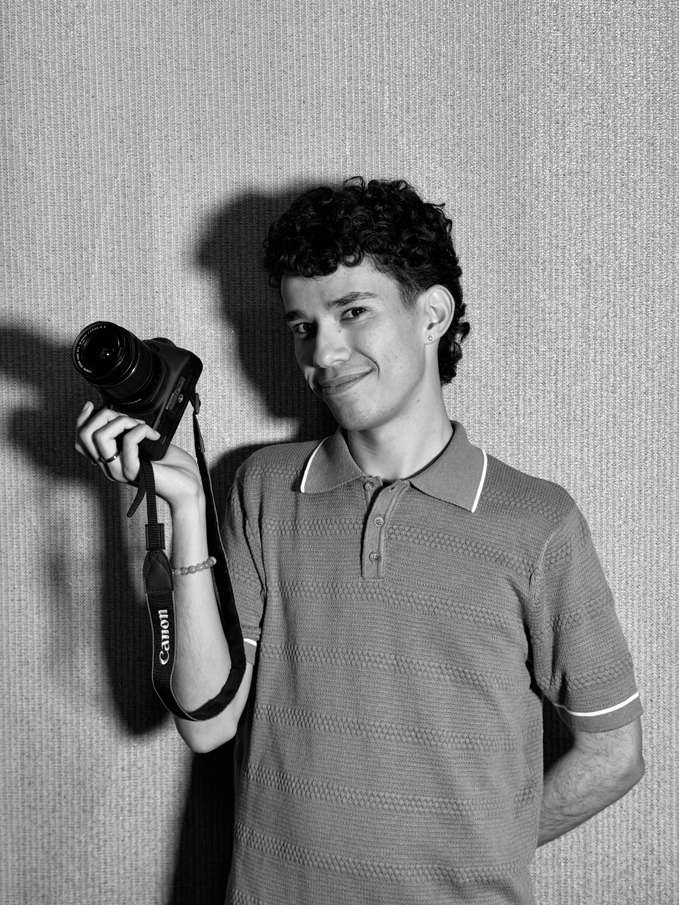

sobre mí
Soy egresado del departamento de comunicaciones en la Universidad de Puerto Rico en Humacao y artista audiovisual. Me interesa combinar narrativa visual, música y diseño para crear proyectos con identidad propia. Me apasiona la música y la manera en que esta permite unificar experiencias singulares en un colectivo. Espero mi arte conecte también contigo.
A nivel personal escribo canciones basadas en emociones universales. Utilizo programas de producción como Logic Pro, y algunos micrófonos para grabar los intrumentos y, primordialmente, mi voz. Con mi música busco conectar con otras personas entendiendo que una buena canción puede hacer la diferencia en el día de una persona, como siempre lo ha hecho para mí.
Me atrae mucho la contrucción de mundos conceptuales dentro de un proyecto. ¿Cómo puedo traducir la experiencia de ver un museo emocional en un álbum? ¿Cómo lo hago con un teatro? ¿Un tribunal?
Colocándome en situaciones hipotéticas mi creatividad vuela escribiendo canciones que expresen algún sentimiento relacionado con estas. La integración de estas canciones con videos, gráficos, diseño, y todo lo demás que conlleva un proyecto completo, es lo más que me alegra y emociona trabajar.
